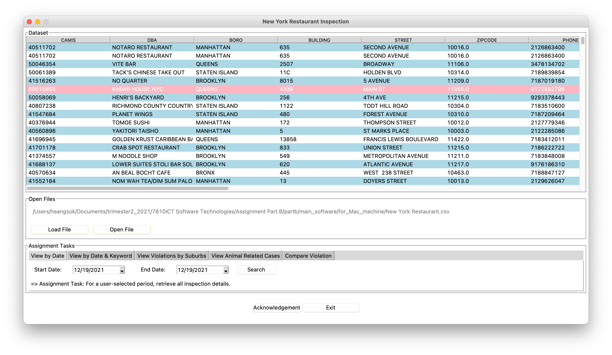

New York Analytical Software Project
The main deliverable of this project is to communicate and visualize the software design ideas that could help the users to gain an accurate and deep understanding of the “New York Restaurant Inspection” dataset.
Source Code
